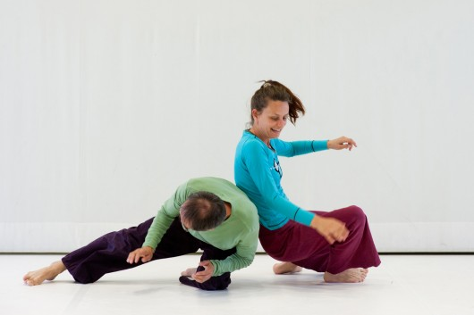

CI-DOJO (Training+Jam)

Fotocredits: Laurent Ziegler
DOJO=Training+Jam, abwechselnd advanced und Dōjō, die Übungshalle in den japanischen Kampfkünsten; dies ist auch teilweise die Bezeichnung für den Meditationsraum im japanischen Zen; in diesem Fall auf die Praxis der Contact Improvisation übertragen. Noch mehr Raum zum Contact Improvisations-Tanzen: Das Format geht abwechselnd sowohl auf die speziellen Wünsche und Bedürfnisse von fortgeschrittenen CI-TänzerInnen und auch von NeubeginnerInnen ein. Die Abende bestehen jeweils aus einem angeleiteten CI-Training und einer nachfolgenden Contact-Jam. CI-Training und Jam können gemeinsam oder unabhängig voneinander besucht werden, die gemeinsame Teilnahme ist empfehlenswert. Als Contact-Dojo steht uns der knapp 200m2 große Turnsaal mit für CI optimalem Holzschwingboden in der VS Gilgegasse 9, 1090 Wien zur Verfügung.
Termine Wintersemester 2021/22 ab 16.9.2021 Open level DOJO: 16.9., 30.9., 14.10., 4.11., 18.11., 2.12., 16.12.2021, Advanced DOJO: 23.9., 7.10., 21.10., 11.11., 25.11., 9.12.2021, Training: 18.15-19.30 Turnsaal Gilgegasse 12, 1090 Wien Open level CI-DOJO: Die open level Termine laden insbesondere auch alle interessierten NeueinsteigerInnen ohne jegliche Vorkenntnisse zum Ausprobieren und Mitmachen ein ("Tasting Contact Improvisation). In den 1,5 stündigen Trainings vor der Jam werden CI Fundamentals vermittelt. Für die nachfolgende Jam wird es eine gemeinsame Eröffnungsrunde zum Kennenlernen sowie ein kurzes angeleitetes warm up geben. Der Fokus der Jam liegt in einem Miteinander-Tanzen unabhängig von den jeweiligen CI-Vorerfahrungen. Advanced CI-DOJO: Die Termine für Fortgeschrittene bieten ein stark physisch orientiertes Bewegungs- und Contact Improvisations Training. Wir arbeiten sowohl an einer Vertiefung von Grundprinzipien der CI wie dem konsequenten Folgen des rollenden Kontaktpunktes sowie der Bereitschaft sich jederzeit fallen zu lassen als auch an der Technik für Lifts und von spezifischen Bewegungsabläufen. In den nachfolgenden Jams möchten wir das gesamte in der nunmehr bald 50jährigen Geschichte der CI erarbeitete Bewegungs Know-how zur Anwendung bringen: dancing offbalance/commitment to fall
Kosten: Training 10 - 15€, Jam 6 - 10€, Training+Jam 12 - 20€
Wichtig: Bitte vor dem Betreten der Turnsaalgarderobe die Schuhe am Gang ausziehen; keinenfalls Roller oder Fahrräder mit in die Schule nehmen! |